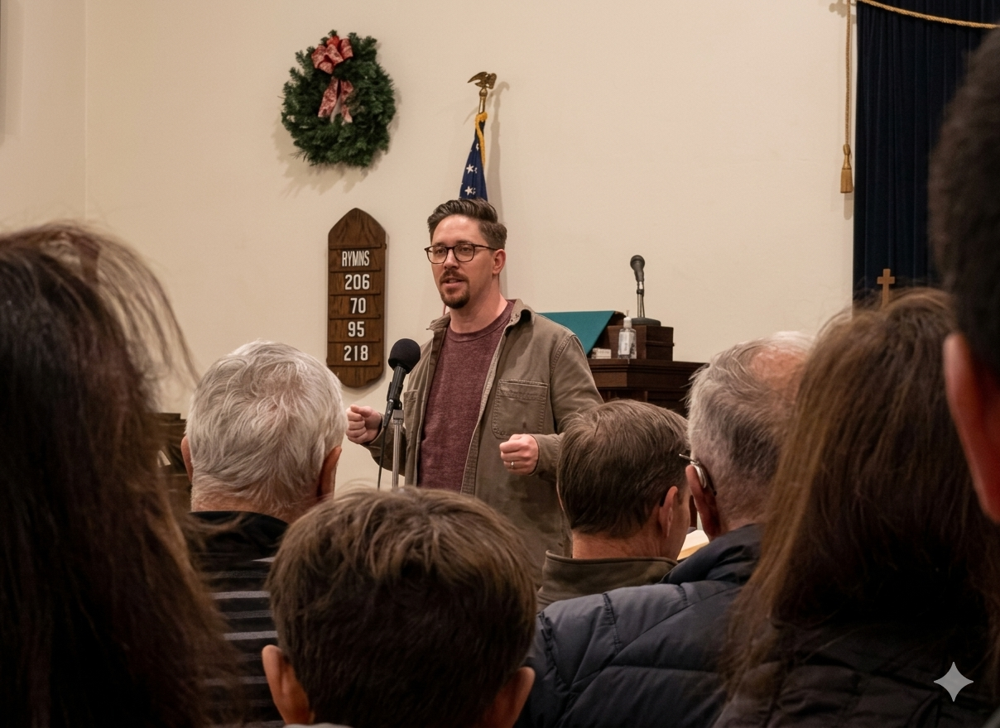
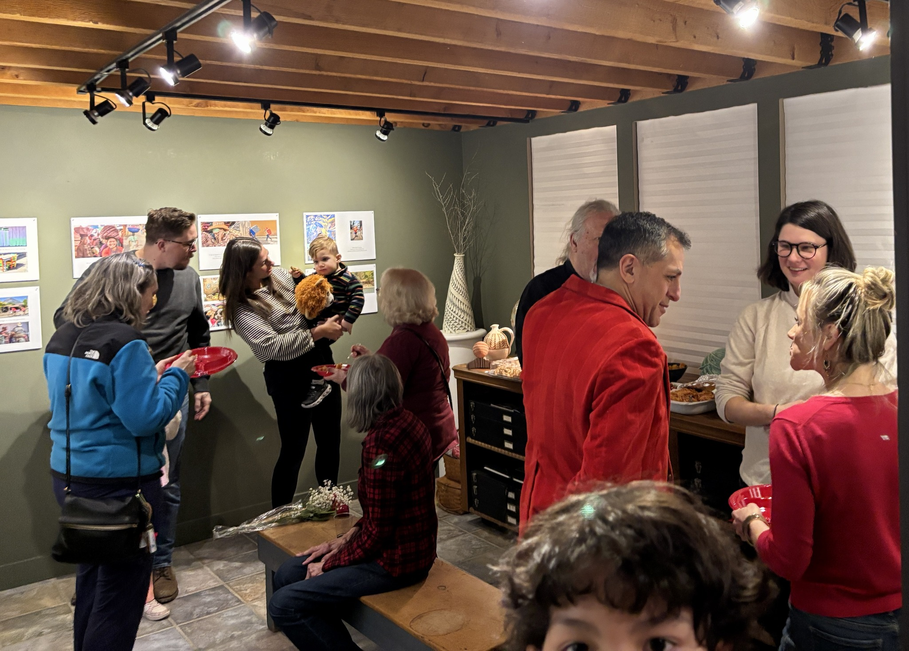

Ryan has deep roots in Sugar Loaf, the hamlet within Chester where he lives with his family.
Attending and participating in Town Board meetings is one of the most direct ways a resident can hold local government accountable. Here are a few recent examples.
Seeking clarity on how water billing will work for residents in the new Chester Greens neighborhood.
Pressing the board for transparency on a major infrastructure decision involving a potential $1 million bond.
Advocating for Sugar Loaf residents on public safety and snow removal under the hamlet's unique road conditions.
Ryan serves as an Independent Director of the Sugar Loaf Community Foundation, a local organization dedicated to strengthening the hamlet and the broader Chester community. The Foundation invests in residents through advocacy, programming, and direct community action — from pushing for infrastructure improvements like sidewalk installation and park beautification, to organizing cultural events celebrating music, art, and the outdoors, to bringing neighbors together through clean-ups, barbecues, and year-round community gatherings.
Helping install Sugar Loaf's community Christmas tree with neighbors.

Speaking at the Voices of Sugar Loaf storytelling event.

Year-end celebration with the Sugar Loaf Community Foundation.
Ryan previously volunteered on the Town Board committee for the Sugar Loaf Performing Arts Center, giving him firsthand experience with how local government navigates decisions about cultural infrastructure — the budget pressures, the competing stakeholder interests, and the real tradeoffs involved. The board ultimately made the fiscally responsible call to sell the PAC, eliminating significant debt. For Ryan, that experience reinforced the importance of proactive planning for cultural spaces — so communities don't have to face those tradeoffs in the first place.
Every contribution helps us reach more Chester residents.
Support the CampaignPaid for by Ryan for Chester Town Board. Individual donors only.